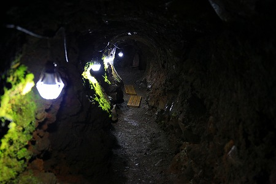

船津胎内樹型/山梨県
ここ数年富士山信仰に興味津々な私、こと小嶋独観。
その成果はいずれ改めてまとめてキッチリたっぷりお伝えする事になると思うが、その冨士信仰の様々なカタチをリサーチしている上で溶岩洞窟が信仰の場となっている事を知った。
富士山周辺には溶岩樹型とか溶岩隧道と呼ばれる洞窟がいくつか存在する。
これらは富士山噴火の際に複数の樹木がなぎ倒され、その上に溶岩が覆いかぶさって出来たトンネル状の空間だ。
溶岩が覆いかぶさった事で中の樹木は燃えてしまい、結果木の幹をかたどりしたかのようなトンネルが出来るのだ。
そのようなトンネルを富士信仰の行者や富士講の信者たちは神秘的な存在として信仰の場と捉えたのだ。
で、今回訪れたのはその溶岩洞窟の中でも有名な船津胎内樹型。
胎内樹型というのは木のカタチから出来たトンネルを潜ることで胎内巡りを追体験しよう、という信仰装置で、この近くにも吉田の胎内樹型というものが存在する（吉田の胎内樹型は普段は非公開）。
かつては富士登山に赴く行者や信徒が登山前にここを訪れ、胎内巡りをすることで身を清めたという。
確かに生まれ変わって過去の穢れを禊ぐにはもってこいの場所であろう。
そんなこんなで人生リセットしたい事だらけの不肖、私。
早速、胎内樹型に向かうのであった…。
現在、船津胎内樹型は河口湖フィールドセンターという自然体験施設の中にある。
受付で見学料を支払い早速胎内樹型へ。
無戸室浅間神社の拝殿が建っている。
神社の傍らには富士講が建立した石碑と共に大日如来のお姿も。
今では富士山の本尊は木花咲耶姫とされているが、かつては富士山の本尊は大日如来だった。
その頃の名残だろう。
拝殿に入ってみる。
賽銭箱の奥に幕が架かっていて、その先にぽっかりと樹型の入り口が口を開けていた。
まるで秘密基地の入り口のようでドキドキするじゃないの！
拝殿内には富士信仰に関する様々なグッズが展示、奉納されている。
江戸時代の富士参拝の様子。
江戸時代には富士登山がブームになり、大勢の人が富士の頂を目指した。
特に江戸からの参詣客が多く、そのほとんどは富士吉田の登山口から富士山に向かった。
まるで目玉おやじが連なって富士山頂に向かっているようで、富士登山フィーバーが今に限ったことではないのが伺える。
富士講の旗。
関東各地には富士講が組織されていて、毎年その講の代表者が講全員のために代参していた。
今でも関東各地には富士講の組織はたくさん存在している。
これは溶岩石筍といい、樹型内で生成された石筍だ。
前衛彫刻のようでもあり、未知の生き物のようでもあり、不思議な造形だ。
これは富士行者の藤四朗の像といわれている。
というわけで樹型の中に入ってみよう。
一歩中に足を踏み入れた瞬間、これまでの自然豊かなのほほ〜んとした世界がネガポジ逆転。
激ヘビーな硬質な世界になっちゃったよ、
どうですか？このエイリアンに出てきそうな世界観。
壁や天井は木々を呑みこみ、暴れまくった挙句、冷えて固まってその状態をキープし続けている。
その凍結した暴力性に独りおののく。
山紫水明な自然観とはまた別のもうひとつの自然の姿。
それを信仰の一環として実感するのはかなり強烈な宗教体験なのではなかろうか。
波型のように凝固した溶岩。
偶然とはいえ、思わず何らかの意味を見出さずにはいられない造形だ。
入洞してわずか数メートルでこの精神状態。恐れ入谷の鬼子母神でございます。
まるで肋骨のような内壁。
溶岩が液体だった頃の記憶を数百年にわたって封じ込めている。
映画エイリアン・コベナントを観た直後だけに、H・R・ギーガーの作品にしか見えないんだよなあ。
地質学上でも大変貴重なものだという。
中に入って正面には幣束が置かれている。
この溶岩樹型は複数の木々が折り重なった末に出来た洞窟なので、内部の通路は複雑に入り組んでいる。
幣束のあるところから振り返るとこんな。
↑左上が入り口、右下へと進むわけです。
一段降りたところには脇道へと進む入り口がある。
この脇道は母の胎内と呼ばれている。
入洞前のレクチャーではこの母の胎内は奥が行き止まりになっていて、大変狭い通路なので、気を付けてくださいとのことだった。
奥に人の気配がないようなので、進んでみる。
しばらく進むと、通路は猛烈に狭くなってきた。
膝を抱えて座り込んでその状態でやっと進める位。
しかも進めば進むほど狭くなっていくじゃないか！
ヒーヒー言いながら、最終的には四つんばいになりながら何とか一番奥まで辿りついた。
再奥部は木の根っこの部分だったようで、やや広めの空間だった。
木花咲耶姫が祀られていた。
また来た道をヒーヒー言いながら折り返し、先へ進む。

今度は父の胎内と呼ばれる通路。
胎内巡りって母の胎内を巡るものじゃあないのか？
父ちゃんの胎内とか別に巡らなくてよくないすか？
…という釈然としない想いを胸に進んで行く。
途中枝道のように樹型がある。
これらは細くて人が入れないが、ライティングされており中々神秘的だった。
父の胎内の奥には大日如来が祀られていた。
母が木花咲耶姫、父が大日如来、という構造になっているのか。
その先は天上も高くなり、屈まなくても進めるようになった。
ここは直立猿人の末裔として、背筋を伸ばして歩くことを存分に謳歌させていただきました。
おおお、出口が見えてきた！
最後まで溶岩で出来た内壁はヌラヌラツヤツヤしていた。
見た目は柔らかそうだが、実際にはガチガチに堅い岩なので頭や背中をぶつけると結構なダメージを負います（体験者談）。
色々あったような気もするが時間的には十数分の体験だったようだ。
外に出てみると美しい森や美味しい空気や鳥の囀りが私の再生を祝福してくれている（ように感じた）。
ボク、生まれ変わったよ！
2017.09.
珍寺大道場 HOME